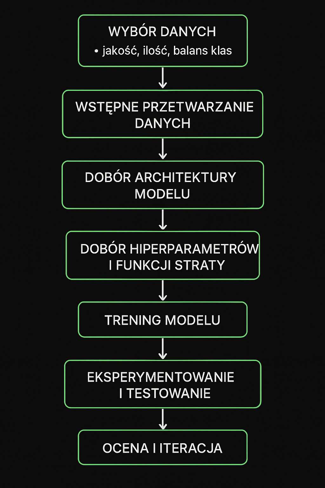

Jak rozpocząć
Sztuczna inteligencja to dziedzina informatyki, która zajmuje się tworzeniem systemów potrafiących symulować ludzką inteligencję — np. rozpoznawać obrazy, przetwarzać język naturalny, podejmować decyzje czy uczyć się na podstawie danych.
Szczególnie ciekawym polem tej dziedziny są sieci neuronowe (CNN - Convolutional Neural Network) oraz Deep Learning (po polsku "Głębokie nauczanie"). Dzięki tym potężnym technologiom można realizować projekty oparte na klasyfikacji obiektów, robotyce, detekcji obiektów, segmentowaniu obrazów czy rozpoznawaniu tekstu.
Najlepszym środowiskiem do rozpoczęcia przygody z modelami jest Google Colab - darmowa platforma Google, która umożliwia pisanie kodu w języku Python w chmurze, bez szczególnego przystosowania i instalacji. Nie są to jednak jego największe plusy.
Podczas trenowania modeli szczególnie ważnym dla nas czynnikiem jest moc obliczeniowa, ponieważ to od niej zależy, jaką ilość danych model jest w stanie przeanalizować w rozsądnym czasie. Każdy komputer ma komponenty odpowiedzialne za przetwarzanie danych - głównym jest CPU (Central Processing Unit). Dodatkowo, nowoczesne karty graficzne zawierają specjalistyczne procesory GPU (Graphics Processing Unit), które składają się z dużej ilości oddzielnych rdzeni umożliwiających wykonywanie wielu operacji równolegle. I tutaj ukazuje się największa zaleta Google Colab - możemy za darmo "pożyczyć" sobie kartę graficzną od Google i trenować tam nasze modele na GPU. Poza tym Google Colab pozwala nam na użycie Jupyter Notebook, w którym większość niezbędnych bibliotek jest już zainstalowana.
Mamy zatem gotowe środowisko. Pozostaje dobrać konkretną technologię, w której stworzymy model. Obecnie na rynku bibliotek i frameworków do Machine Learningu w Pythonie dominują dwie technologie: PyTorch i TensorFlow. Różnice pomiędzy nimi mają raczej charakter techniczny. PyTorch jest przystępny (bardziej "pythonowy"), oferuje łatwe debugowanie i intuicyjność. Służy on między innymi do pisania programów w Olimpiadzie Sztucznej Inteligencji. Natomiast TensorFlow oferuje prostsze wdrażanie i jest powszechnie używany w dużych, korporacyjnych projektach. W naszych programach użyjemy obu technologii, aby pokazać ich możliwości i różnice. Wykres obok pokazuje pokazuje zainteresowanie w czasie z Google Trends (niebieski — PyTorch, czerwony — TensorFlow).
Teraz przechodzimy bezpośrednio do projektu, pierwszym wyzwaniem jest wybór zbioru danych. Ważne jest, aby zbiór danych był dostatecznie duży (docelowo zazwyczaj jak największy, ale jednocześnie dostosowany do naszych możliwości) oraz odpowiednio zróżnicowany (aby uniknąć przeuczenia - overfittingu). Najlepszym źródłem zbiorów danych są portale takie jak Kaggle lub GitHub.
Zaczynamy od wczytania danych do projektu w Google Colab. Najwygodniejszym sposobem jest pobranie ich z Dysku Google (po wcześniejszym zamontowaniu go w Colabie) lub bezpośrednio ze źródła, na przykład za pomocą Kaggle API.
Musimy teraz podjąć kilka ważnych decyzji dotyczących projektu. Między innymi dobrać odpowiednią architekturę modelu. Warto pamiętać, że można skorzystać z modelu wstępnie trenowanego, co polepszy jego działanie. Istotne jest dobranie modelu o odpowiednio zaawansowanej architekturze w stosunku do zadania. Należy również pamiętać, że nawet niewielkie zmiany hiperparametrów , dobór funkcji optymalizującej czy funkcji straty mogą mieć istotny wpływ na wydajność modelu.
Ważne jest także, aby wspomnieć o najczęściej popełnianych błędach:
Z reguły większość błędy podczas kodowania AI, są to błędy związane z nieodpowiednim shape tensorów (tensor - to macierz o dowolnym wymiarze, a shape to wymiary tensora). Dlatego już od początku warto starać się zrozumieć matematykę stojącą za programowaniem sztucznej inteligencji. Szczególnie istotnym działem w tej dziedzinie jest oczywiście algebra liniowa, ale równie często pojawiają się elementy analizy matematycznej.
Przede wszystkim: dane. Zawsze przed realizacją projektu trzeba zapoznać się z datasetem, z którym mamy doczynienia. Jest kilka cech, które mogą być kluczowe - ilość danych, ich zróżnicowanie (dla lepszej genralizacji) i zrównoważnie klas (być może niektórych próbek jest więcej niż innych). Poza tym negatywnie na działanie modelu może wpływać złe obrabianie danych przed wykonanie predykcji czy treningiem.
Na tym polu najlepszą metodą nauki jest eksperymentowanie. To właśnie powinno zawsze być związane z procesem nauki.